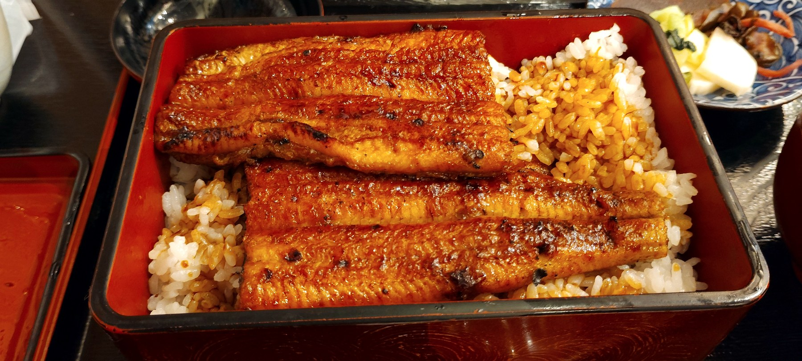
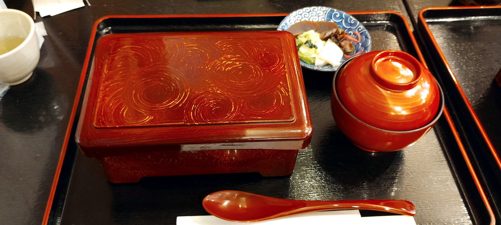
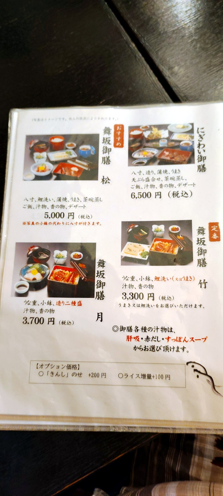
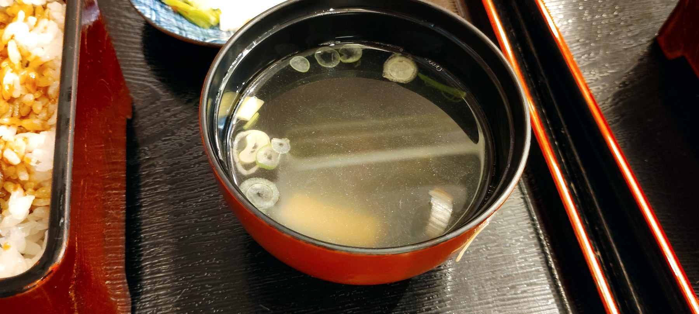
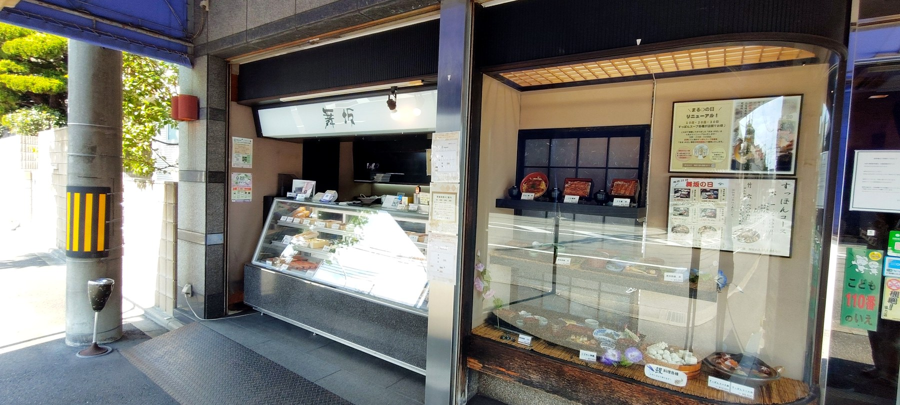

こんにちは、ろぶーです。
僕も彼女も鰻が大好物。この日は友人を交えた3人で京都へ出かけ、年に一、二度訪れるお気に入りの「舞坂 本店」へ行ってきました。
何度も足を運びたくなる店で過ごした時間を、短い動画とともに残します。
年に一、二度の楽しみ
僕と彼女が京都へ行くときに楽しみにしているのが、鰻とすっぽん料理の「舞坂 本店」です。年に一、二度だからこそ、一度一度の時間が印象に残ります。
初めて頼む、期待の鰻セット
今回選んだのは、これまで頼んだことのない初めてのセット。どんな料理が運ばれてくるのか、食べる前から自然と期待が膨らみ、三人でわくわくしながら待つ時間も楽しいひとときでした。


セットにはスープが付き、「すっぽんスープ」と「うなぎの肝吸い」の二種類から選べました。どちらにするか迷う時間も、料理を待つ楽しみの一つです。

彼女と友人との3人で過ごした時間
この日は、彼女と友人との3人で訪れました。好きな店で食事を囲む時間も、京都へ出かける楽しみの一つです。
また次に訪れたときには、その日の出来事も大切に記録していきたいと思います。
舞坂 本店の店舗情報

住所：京都府京都市下京区朱雀北ノ口町2
アクセス：JR梅小路京都西駅から徒歩約6分／京都市バス「七条千本」から徒歩約3分
営業時間：11:00〜20:00（金・土は20:30まで）。平日は昼11:00〜15:00、夜17:00〜
定休日：火曜日（一部不定休）・元日
営業時間や休業日は変更される場合があります。訪問前に公式情報をご確認ください。
記事について
この記事は訪問時の記録と写真・動画、舞坂の公式店舗情報をもとに構成しています。